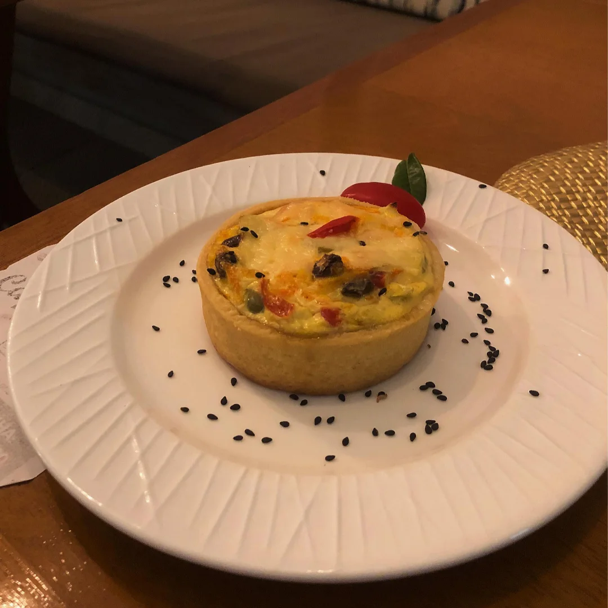

Café e pão de queijo
Uma combinação que a gente gosta de colocar à mesa. Conheça nossas bebidas e acompanhamentos.
Na Avenida da Integração, em Petrolina.
Café cremoso, pão de queijo e uma mesa para fazer uma pausa gostosa no seu dia.

Consulte as escolhas disponíveis com a equipe e encontre o que combina com a sua vontade.
Uma combinação que a gente gosta de colocar à mesa. Conheça nossas bebidas e acompanhamentos.
Uma quiche para acompanhar seu café. Consulte as opções disponíveis.
Bolos e cupcakes também podem acompanhar sua pausa. Consulte as opções disponíveis.
Da nossa vitrine para a sua mesa.
Que tal uma quiche para acompanhar o café? Consulte as opções e escolha o que você quer experimentar hoje.
Antes da visita, nossa equipe pode ajudar com informações sobre produtos e atendimento.
Consultar os produtos
Estamos na Avenida da Integração, em Petrolina. Fale com nossa equipe para informações e disponibilidade.
Conversar no WhatsAppFale com a equipe para conhecer os produtos e consultar os itens disponíveis no momento.
Chame a gente pelo WhatsApp. A equipe confirma os produtos, os valores atuais e as informações para sua visita ou pedido.
Estamos na Avenida da Integração, 521 A, no bairro São José, em Petrolina. Use o link de localização para planejar seu caminho e confirme o horário com a equipe.